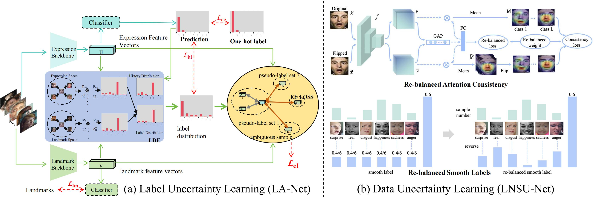

Image-based Static FER
Image-based static facial expression recognition (SFER) involves extracting features from a single image, which captures complex spatial information that related to facial expressions, such as landmarks, and their geometric structures and relationships. In the following, we will first introduce the general architecture of SFER, and then elaborate specific design of SFER methods from the challenge-solving perspectives, including disturbance-invariant SFER, 3D SFER, uncertainty-aware SFER, compound SFER, cross-domain SFER, limited-supervised SFER, and cross-modal SFER.
General SFER

The architecture of general SFER. Figure is reproduced based on (a) CNN-based model, (b) GCN-based model, and (c) Transformer-based model
Disturbance-invariant SFER

The architecture of disturbance-invariant SFER. Figure is reproduced based on (a) Attention-based model (AMP-Net) and (b) Decomposition-based model.
3D SFER

The architecture of 3D SFER. Figure is reproduced based on (a) GAN-based learning (GAN-Int) and (b) Multi-view learning (MV-CNN).
Uncertainty-aware SFER
The architecture of uncertainty-aware SFER. Figure is reproduced based on (a) the label uncertainty learning (LA-Net) and (b) data uncertainty learning(LNSU-Net).
Compound SFER
Compound emotions refer to complex emotional states formed by the combination of at least two basic emotions, which are not independent, discrete categories but exist within a continuous emotional spectrum composed of multiple dimensions. Compared with discrete "basic" emotions or a few dimensions, compound emotions provide a more accurate representation of the diversity and continuity of human complex emotions.
Cross-domain SFER

The architecture of cross-domain SFER. Figure is reproduced based on (a) the transfer learning-based model (CSRL) and (b) the adaption learning-based model (AGRA).
Weak-supervised SFER

The architecture of weak-supervised SFER. Figure is reproduced based on the Ada-CM.
Cross-modal SFER

The architecture of cross-modal SFER. Figure is reproduced based on the CEprompt.